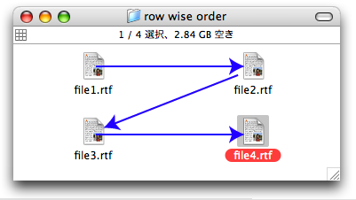
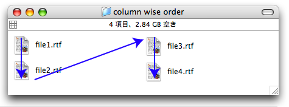

FileSorter is an AppleScript module to sort a list of files of folders according to their view sorting order in the Finder.
FileSorter sort a list of files as followis dpending on the view styles.
When the option "Keep aranged by" is ON, a list of files is sorted with the specified property.
On the ohter cases, the sorting order is detemined by the icon positions. It can be customized whether row wise sorting or column wise sorting by delegate method is_rowwise_for_iconview. The default behavior depands on the labpel posion. When the label position is bottom, the sorting order is row wise. When the label position is right, the sorting order is column wise.

row wise sorting

column wise sorting
Sort as arragend in the list view. For example, if the list view is sorted with modification date, the result of FileSorter is sorted with modification date.
Sort with file names in ascending order.